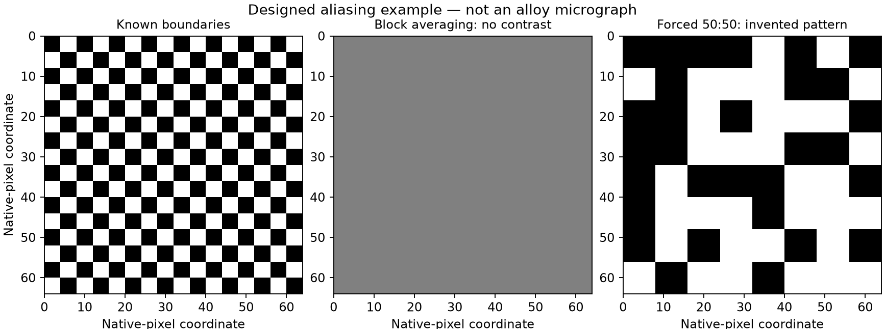
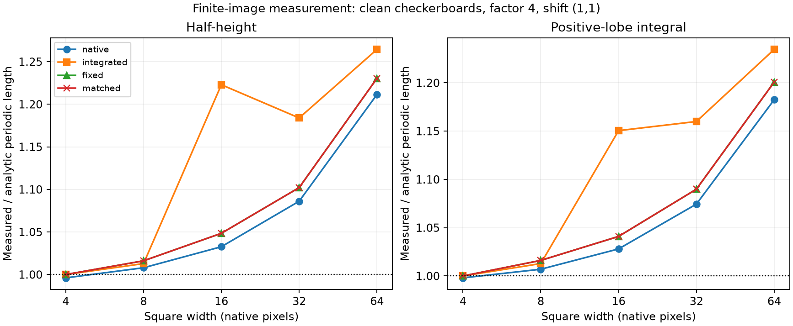

Controlled images, 20 September 2026. AI-assisted analysis for student review.
These are designed checkerboards, not new Kawasaki runs or experimental alloy images. Their growth is prescribed, not discovered. The known formula applies to periodic measurements; the deployed image tool has finite boundaries.
A factor-eight block contains equal amounts of both phases when squares are four pixels wide. Every block therefore becomes 0.5. A binary mask forced to be half-filled has the right fraction but cannot recover the erased boundaries. Its pattern reflects the declared tie-breaking rule.

Matching is exact over the whole mask; these panels show the same 64-by-64-native-pixel region, whose local fraction may differ.
Five square widths, three reduction factors, four translations, clean and paired-defect variants, and two length definitions are retained. The analytic periodic length is one-quarter of the square width. Assigning t = width cubed produces a one-third slope by construction; this is not physical time. All fits use all five widths. Missing lengths remain unresolved.

Results distinguish the finite native baseline from the ideal periodic formula. These controls expose measurement behaviour but do not identify the unique cause of the Kawasaki result. Translations move both the grid and measurement boundary. The balanced defects are not a thermal model.
All observations, fits and direct checks · Reproducibility record